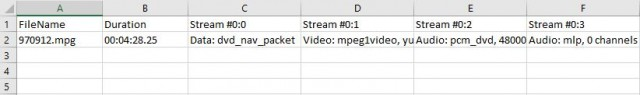
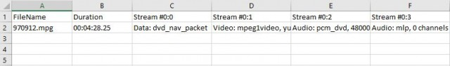

Hi, could you help me do a search replace for a string with the " character?
I'm trying to replace the string "MODE" "TEST" with the string "MODE" "CALC"
I attempted this but it doesn't work
jrepl "\b"MODE" "TEST"\b" ""MODE" "CALC"" /f filename /o -
thank you!
JREPL.BAT v7.14 - regex text processor now with Unicode and XRegExp support
Moderator: DosItHelp
Re: JREPL.BAT - regex text processor - successor to REPL.BAT
nibel wrote:Hi, could you help me do a search replace for a string with the " character?
I'm trying to replace the string "MODE" "TEST" with the string "MODE" "CALC"
I attempted this but it doesn't work
jrepl "\b"MODE" "TEST"\b" ""MODE" "CALC"" /f filename /o -
thank you!
Use the hex code for the double quote \x22
Re: JREPL.BAT - regex text processor - successor to REPL.BAT
Hi!
1)
I want to extract ^([ ]{4}|\t)([A-Za-z0-9_-]+) from files. I use this code:
It works fine but all files are in TEMP. There is a way to do it in one file ?
It tried this code:
It doesn't work. Only occurrences from the last file in the directory appear. It makes sense, but is there a way to do it directly in one file ?
2) I use this code for deleting duplicates (it's from you in a forum ). I tried to update it with jmatchq but to no avail. Could you help me ?
Thank you.
1)
I want to extract ^([ ]{4}|\t)([A-Za-z0-9_-]+) from files. I use this code:
Code: Select all
for /f "delims=" %%a in ('dir /b /a-d "decisions\*.txt" ') do (
call BATCH_JREPL "^([ ]{4}|\t)([A-Za-z0-9_-]+)" "$txt=$2" /jmatchq /f "decisions\%%~a" /o "TEMP\%%~a"
)It works fine but all files are in TEMP. There is a way to do it in one file ?
It tried this code:
Code: Select all
for /f "delims=" %%a in ('dir /b /a-d "decisions\*.txt" ') do (
call BATCH_JREPL "^([ ]{4}|\t)([A-Za-z0-9_-]+)" "$txt=$2" /jmatchq /f "decisions\%%~a" /o "TEMP\file.txt"
)It doesn't work. Only occurrences from the last file in the directory appear. It makes sense, but is there a way to do it directly in one file ?
2) I use this code for deleting duplicates (it's from you in a forum ). I tried to update it with jmatchq but to no avail. Could you help me ?
Code: Select all
call BATCH_JREPL "" "" /N 10 /f "TEMP\ztemp0_all_decisions.txt" ^
| sort /REC 30000 /+11 ^
| BATCH_JREPL ".*?:(.*)$" "x=p;p=$1;($1==x?false:$src);" /jmatch /jbeg "var p='',x" ^
| sort /REC 30000 ^
| BATCH_JREPL "^.*?:" "" > "TEMP\ztemp1_all_decisions.txt"Thank you.
Re: JREPL.BAT - regex text processor - successor to REPL.BAT
I answer to myself. It might help other persons.
1) I didn't realise that >> works here
2) $txt= need to be in the right place:
1) I didn't realise that >> works here
Code: Select all
for %%F in ("decisions\*.txt") do (
call BATCH_JREPL "(advisor_id\s*=\s*)([A-Za-z0-9_-]+)" "$txt=$2" /jmatchq /f "%%F" >> "TEMP\file.txt"
)2) $txt= need to be in the right place:
Code: Select all
call BATCH_JREPL "" "" /N 10 /f "TEMP\ztemp0_all_decisions.txt" ^
| sort /REC 30000 /+11 ^
| BATCH_JREPL ".*?:(.*)$" "x=p;p=$1;$txt=($1==x?false:$src);" /jmatchq /jbeg "var p='',x" ^
| sort /REC 30000 ^
| BATCH_JREPL "^.*?:" "" > "TEMP\ztemp1_all_decisions.txt"Re: JREPL.BAT - regex text processor - successor to REPL.BAT
I'd just like to share some modifications I made the batch file:
I added a debug option and included some verbose echo's of variables throughout the code.
Then I added a switch /DEBUG
So when the process I'm attempting to complete fails, I run it with the debug option and this provides an insight into what is going on.
Cheers!
Code: Select all
============= :Batch portion ===========
@echo off
setlocal disableDelayedExpansion
REM Debug - `0 for debug
SET debug=1
REM TESTING parameter output
IF %debug%==1 GOTO DB1
ECHO Parameter1: %1
ECHO Parameter2: %2
ECHO Parameter3: %3
ECHO Parameter4: %4
ECHO Parameter5: %5
ECHO Parameter6: %6
ECHO Parameter7: %7
ECHO Parameter8: %8
ECHO Parameter9: %9
PAUSE
:DB1
...
IF %debug%==0 ECHO:db FIND = %1
IF %debug%==0 ECHO:db REPL = %2
:: Process HelpI added a debug option and included some verbose echo's of variables throughout the code.
Then I added a switch /DEBUG
So when the process I'm attempting to complete fails, I run it with the debug option and this provides an insight into what is going on.
Cheers!
Re: JREPL.BAT - regex text processor - successor to REPL.BAT
dbenham wrote:Normally (without /M) JREPL reads and processes one line at a time, and the terminating \r\n is not included in the string. So of course searching for \n is pointless. But \r\n automatically gets restored when the resultant line is written.
As stated in the documentation, the only way to productively search for \n is to use the /M option, which puts the entire binary image of the file into memory. But, as you say, the /M option is incompatible with /INC.
So you need a different approach.
I'm not 100% sure of your end goal.
Given the following inputCode: Select all
Preserve 1
Preserve 2
BEGIN
A
B
C
END
Preserve 3
Preserve 4
Then I interpret your desired output to beCode: Select all
Preserve 1
Preserve 2
BEGIN
A|B|C
END
Preserve 3
Preserve 4
The following should give a result like above. I use the /M option to capture everything between the BEGIN (inclusive) and END (exclusive). I use the /JMATCHQ option to apply a second find/replace on the lines after BEGIN, substituting | for each \r\n.
The code is simpler with a simple FOR instead of FOR /FCode: Select all
@echo off
for %%F in ("GAME\*.txt"') do (
call jrepl "(^BEGIN\r?\n)([\s\S]*?)(?=\nEND$)" "$txt=$1+$2.replace(/\r?\n/gm,'|')" /jq /m /f "%%F" /o -
)
Dave Benham
This code works fine only if you remove an extra character:
for %%F in ("GAME\*.txt"') do (
call jrepl "(^BEGIN\r?\n)([\s\S]*?)(?=\nEND$)" "$txt=$1+$2.replace(/\r?\n/gm,'|')" /jq /m /f "%%F" /o -
)
for %%F in ("GAME\*.txt") do (
call jrepl "(^BEGIN\r?\n)([\s\S]*?)(?=\nEND$)" "$txt=$1+$2.replace(/\r?\n/gm,'|')" /jq /m /f "%%F" /o -
)
Thank you for it
Re: JREPL.BAT - regex text processor - successor to REPL.BAT
Quick and probably stupid question about JREPL.
I am trying to put a carat at the beginning of each line, so that a file of:
first
second
third
becomes a file of:
^first
^second
^third
The command I am using is:
call jrepl "^" "^" /f input.txt /o output.txt
But the output file ends up with two carats at the beginning of the line:
^^first
^^second
^^third
Can anyone tell me what I am doing wrong?
I am trying to put a carat at the beginning of each line, so that a file of:
first
second
third
becomes a file of:
^first
^second
^third
The command I am using is:
call jrepl "^" "^" /f input.txt /o output.txt
But the output file ends up with two carats at the beginning of the line:
^^first
^^second
^^third
Can anyone tell me what I am doing wrong?
Re: JREPL.BAT - regex text processor - successor to REPL.BAT
Nothing stupid at all - you are doing the logical thing.
Your problem is the result of an unfortunate behavior of batch - CALL doubles quoted carets ("^" becomes "^^"), and there is absolutely nothing you can do to prevent it.
So the JREPL program actually sees
It is interesting that the regex engine treats ^^ the same as ^ in the search string. But it obviously causes problems in the replacement string.
The best solution is to add the /X option and use the \x5E hex escape sequence for the caret.
Another option is to put the find and replace arguments in variables and use the /V option
If you use the /V option with extended ascii in either variable, then you should also add the /X option.
Another awkward option is to drop the quotes and escape the caret. But it can be difficult to figure out how many rounds of escape are needed, so I don't recommend this option. In your case, you need
Dave Benham
Your problem is the result of an unfortunate behavior of batch - CALL doubles quoted carets ("^" becomes "^^"), and there is absolutely nothing you can do to prevent it.
So the JREPL program actually sees
Code: Select all
jrepl "^^" "^^" /f input.txt /o output.txt
It is interesting that the regex engine treats ^^ the same as ^ in the search string. But it obviously causes problems in the replacement string.
The best solution is to add the /X option and use the \x5E hex escape sequence for the caret.
Code: Select all
jrepl "^" "\x5E" /x /f input.txt /o output.txt
Another option is to put the find and replace arguments in variables and use the /V option
Code: Select all
set "find=^"
set "repl=^"
call jrepl find repl /v /f input.txt /o output.txt
Another awkward option is to drop the quotes and escape the caret. But it can be difficult to figure out how many rounds of escape are needed, so I don't recommend this option. In your case, you need
Code: Select all
call jrepl "^" ^^^^^^^^ /f input.txt /o output.txt
Dave Benham
-
mogodan2008
- Posts: 17
- Joined: 25 Jun 2017 02:37
Re: JREPL.BAT - regex text processor - successor to REPL.BAT
Hi,
I have a text file like:
<eye>
<eye-bounds>
<attribute name="3d-position-z">852.11</attribute>
<attribute name="3d-position-y">-92.95</attribute>
<attribute name="3d-position-x">-162.88</attribute>
<attribute name="occlusion">none</attribute>
<attribute name="open-closed-state">closed</attribute>
<geometry>
<Rectangle x="419" y="288" width="15" height="12"/>
</geometry>
</eye-bounds>
</eye>
<eye>
<eye-bounds>
<attribute name="3d-position-z">808.20</attribute>
<attribute name="3d-position-y">-62.91</attribute>
<attribute name="3d-position-x">-123.82</attribute>
<attribute name="occlusion">none</attribute>
<attribute name="open-closed-state">closed</attribute>
<geometry>
<Rectangle x="446" y="310" width="14" height="11"/>
</geometry>
</eye-bounds>
</eye>
How can I use Jrepl in a batch.bat file to read the x value of first eye-bounds and store in a variable var1,
and then read the x value of second eye-bounds and store in a variable var2?
Thank you!
Dan
I have a text file like:
<eye>
<eye-bounds>
<attribute name="3d-position-z">852.11</attribute>
<attribute name="3d-position-y">-92.95</attribute>
<attribute name="3d-position-x">-162.88</attribute>
<attribute name="occlusion">none</attribute>
<attribute name="open-closed-state">closed</attribute>
<geometry>
<Rectangle x="419" y="288" width="15" height="12"/>
</geometry>
</eye-bounds>
</eye>
<eye>
<eye-bounds>
<attribute name="3d-position-z">808.20</attribute>
<attribute name="3d-position-y">-62.91</attribute>
<attribute name="3d-position-x">-123.82</attribute>
<attribute name="occlusion">none</attribute>
<attribute name="open-closed-state">closed</attribute>
<geometry>
<Rectangle x="446" y="310" width="14" height="11"/>
</geometry>
</eye-bounds>
</eye>
How can I use Jrepl in a batch.bat file to read the x value of first eye-bounds and store in a variable var1,
and then read the x value of second eye-bounds and store in a variable var2?
Thank you!
Dan
-
rebornassassin
- Posts: 1
- Joined: 24 Jul 2017 01:35
Re: JREPL.BAT - regex text processor - successor to REPL.BAT
Hi, I'm trying to replace
[assembly: AssemblyFileVersion("4.0.0.0")]
with
[assembly: AssemblyFileVersion("3.0.0.123")]
where the 4.0.0.0 could be any version number.
I'm using the command
Which gives an error,
I have tested the regular expression \[assembly\: AssemblyFileVersion\([0-9\.\"]*\)\] on https://regex101.com/ which appears to be correct.
What am I doing wrong spent a few hours trying this, any help would be much appreciated.
I have attached the actual file that I want to run it on.
[assembly: AssemblyFileVersion("4.0.0.0")]
with
[assembly: AssemblyFileVersion("3.0.0.123")]
where the 4.0.0.0 could be any version number.
I'm using the command
Code: Select all
jrepl "\[assembly\: AssemblyFileVersion\([0-9\.\"]*\)\]" "[assembly: AssemblyFileVersion("3.0.0.532")]" /f C:\src\App\Properties\AssemblyInfo.cs /o -Which gives an error,
AssemblyFileVersion\([0-9\.\"]*\)\]" was unexpected at this time.
I have tested the regular expression \[assembly\: AssemblyFileVersion\([0-9\.\"]*\)\] on https://regex101.com/ which appears to be correct.
What am I doing wrong spent a few hours trying this, any help would be much appreciated.
I have attached the actual file that I want to run it on.
Re: JREPL.BAT - regex text processor - successor to REPL.BAT
The CSCRIPT engine does not allow passing of a double quote literal within an argument. You must use an escape sequence to represent the quote.
You can use the standard regex \x22 hex escape sequence, or you can add the /X option and use the non-standard \q escape sequence.
Here is how I would do it:
Dave Benham
You can use the standard regex \x22 hex escape sequence, or you can add the /X option and use the non-standard \q escape sequence.
Here is how I would do it:
Code: Select all
jrepl "(\[assembly: AssemblyFileVersion\(\q)[^\q]*(\q\)\])" $13.0.0.123$2 /x /f C:\src\App\Properties\AssemblyInfo.cs /o -
Dave Benham
Re: JREPL.BAT - regex text processor - successor to REPL.BAT
Hi,
I have a case a bit complicated. I would like to replace a list of strings in some files with another list from a file. It is like an update. In fact, strings are syntax variables for Sublime Text.
TEMP\all_quests.txt (containing strings only, one per line)
Part of Game_Syntaxes\syntax_file_1.sublime-syntax
What I want:
Same part of Game_Syntaxes\syntax_file_1.sublime-syntax
As you can see, the syntax is not the same in TEMP and in Game_Syntaxes (in Game_Syntaxes there is an indentation, the first string has no pipe and the number of strings is not always the same). The first line ( VARIABLE_ALL_QUESTS: |-) can exist zero or one time per file. If it exists, the list must be updated. The syntax in Game_Syntaxes is always the same (only strings and VARIABLE_ALL_QUESTS change).
All strings match the regex [A-Za-z0-9_-]+ (no spaces, no accents, etc.) and are not very long (<50 characters), but can be thousands.
There are
- 52 lists (one list per file in TEMP)
- 64 syntax files in Game_Syntaxes (some of them have 30 000 lines, but < 800kb).
Currently I use a script working fine, but it is very slow. I'm pretty sure it can be a lot faster. Furthermore, I use a workaround (put the list in one line) because I have no ideas how replacing several lines by several lines from a file. Avoiding it should speed things up.
I tried to be clear. If you accept to help me on this case and needs to have all real files, I can send them to you by pm.
Thank you
I have a case a bit complicated. I would like to replace a list of strings in some files with another list from a file. It is like an update. In fact, strings are syntax variables for Sublime Text.
TEMP\all_quests.txt (containing strings only, one per line)
Code: Select all
new_quest1
new_quest2
new_quest3
new_quest4Part of Game_Syntaxes\syntax_file_1.sublime-syntax
Code: Select all
...
VARIABLE_ALL_QUESTS: |-
(?x:
old_quest1
| old_quest2
| old_quest3
| old_quest4
| old_quest5
| old_quest6
)
...What I want:
Same part of Game_Syntaxes\syntax_file_1.sublime-syntax
Code: Select all
...
VARIABLE_ALL_QUESTS: |-
(?x:
new_quest1
| new_quest2
| new_quest3
| new_quest4
)
...As you can see, the syntax is not the same in TEMP and in Game_Syntaxes (in Game_Syntaxes there is an indentation, the first string has no pipe and the number of strings is not always the same). The first line ( VARIABLE_ALL_QUESTS: |-) can exist zero or one time per file. If it exists, the list must be updated. The syntax in Game_Syntaxes is always the same (only strings and VARIABLE_ALL_QUESTS change).
All strings match the regex [A-Za-z0-9_-]+ (no spaces, no accents, etc.) and are not very long (<50 characters), but can be thousands.
There are
- 52 lists (one list per file in TEMP)
- 64 syntax files in Game_Syntaxes (some of them have 30 000 lines, but < 800kb).
Currently I use a script working fine, but it is very slow. I'm pretty sure it can be a lot faster. Furthermore, I use a workaround (put the list in one line) because I have no ideas how replacing several lines by several lines from a file. Avoiding it should speed things up.
Code: Select all
:::: This first part exists 52 times... Not fast either
:: remove duplicated strings
call BATCH_JREPL "" "" /N 10 /f "TEMP\ztemp0_all_quests.txt" ^
| sort /REC 30000 /+11 ^
| BATCH_JREPL ".*?:(.*)$" "x=p;p=$1;$txt=($1==x?false:$src);" /jmatchq /jbeg "var p='',x" ^
| sort /REC 30000 ^
| BATCH_JREPL "^.*?:" "" > "TEMP\ztemp1_all_quests.txt"
:: sort the lines
sort /REC 30000 /c TEMP\ztemp1_all_quests.txt /o TEMP\all_quests.txt
:: change the syntax
call BATCH_JREPL "(\r\n)" "|" /i /m /x /f TEMP\all_quests.txt /o -
call BATCH_JREPL "\|$" "" /i /m /x /f TEMP\all_quests.txt /o -
call BATCH_JREPL "^" "VARIABLE_ALL_QUESTS: '(" /i /m /x /f TEMP\all_quests.txt /o -
call BATCH_JREPL "$" ")'" /i /m /x /f TEMP\all_quests.txt /o -
:::: Workaround 1 - 30 seconds
:: In one line
for %%F in ("Game_Syntaxes\*.sublime-syntax") do (
call BATCH_JREPL "(^ # MODDABLE\r?\n)([\s\S]*?)(?=\n # NON MODDABLE$)" "$txt=$1+$2.replace(/\r\n \| /gm,'|')" /jq /m /f "%%F" /o -
call BATCH_JREPL "(^ # MODDABLE\r?\n)([\s\S]*?)(?=\n # NON MODDABLE$)" "$txt=$1+$2.replace(/\r\n \)/gm,')\'')" /jq /m /f "%%F" /o -
call BATCH_JREPL "(^ # MODDABLE\r?\n)([\s\S]*?)(?=\n # NON MODDABLE$)" "$txt=$1+$2.replace(/\|-\r\n \(\?x:\r\n\s*/gm,'\'(')" /jq /m /f "%%F" /o -
)
:::: In fact, there are 52 lines like this one. >6 minutes (Just for information, I tried with for %%F and it is even longer)
for /f "delims=" %%a in ('dir /b /a-d "Game_Syntaxes\*.sublime-syntax" ') do (
call BATCH_JREPL "VARIABLE_ALL_QUESTS: .*$" "$txt=stdin.AtEndOfStream?$0:stdin.ReadLine()" /jq /f "Game_Syntaxes\%%~a" <"TEMP\all_quests.txt" /o -
)
:::: Workaround 2 - 50 seconds
:: In several lines
for /f "delims=" %%a in ('dir /b /a-d "Game_Syntaxes\*.sublime-syntax" ') do (
call BATCH_JREPL "'\(" "(?x:\r\n " /inc "/^ # MODDABLE$/+1:/^ # NON MODDABLE$/-1" /x /f "Game_Syntaxes\%%~a" /o -
call BATCH_JREPL "\|" "\r\n | " /inc "/^ # MODDABLE$/+1:/^ # NON MODDABLE$/-1" /x /f "Game_Syntaxes\%%~a" /o -
call BATCH_JREPL "\)'" "\r\n )" /inc "/^ # MODDABLE$/+1:/^ # NON MODDABLE$/-1" /x /f "Game_Syntaxes\%%~a" /o -
call BATCH_JREPL "\: " ": |-\r\n " /inc "/^ # MODDABLE$/+1:/^ # NON MODDABLE$/-1" /x /f "Game_Syntaxes\%%~a" /o -
)I tried to be clear. If you accept to help me on this case and needs to have all real files, I can send them to you by pm.
Thank you
Re: JREPL.BAT - regex text processor - successor to REPL.BAT
Hi dbenham,
Thank you for JREPL, I'm still learn how this magic works.
So to start, I have thousands of these text files that I extracted using ffmpeg's ffprobe:
I only need the following information:
And place them in an excel file table as follows:

I understand that I need to get the information into csv form in order for that to happen. I tried the following code to output the file name as a start but it outputs nothing. I have also checked the regex using regex101.com and it matches the value I am looking for. Please help.
Thank you for JREPL, I'm still learn how this magic works.
So to start, I have thousands of these text files that I extracted using ffmpeg's ffprobe:
Code: Select all
ffprobe : ffprobe version N-82966-g6993bb4 Copyright (c) 2007-2016 the FFmpeg developers
At line:26 char:5
+ ffprobe $oldVideo 2>&1 | Out-File $errorLog
+ ~~~~~~~~~~~~~~~~~~~~~~
+ CategoryInfo : NotSpecified: (ffprobe version...mpeg developers:String) [], RemoteException
+ FullyQualifiedErrorId : NativeCommandError
built with gcc 5.4.0 (GCC)
configuration: --enable-gpl --enable-version3 --enable-dxva2 --enable-libmfx --enable-nvenc --enable-avisynth --enable-bzlib --enable-fontconfig --enable-frei0r --enable-gnutls
--enable-iconv --enable-libass --enable-libbluray --enable-libbs2b --enable-libcaca --enable-libfreetype --enable-libgme --enable-libgsm --enable-libilbc --enable-libmodplug
--enable-libmp3lame --enable-libopencore-amrnb --enable-libopencore-amrwb --enable-libopenh264 --enable-libopenjpeg --enable-libopus --enable-librtmp --enable-libsnappy
--enable-libsoxr --enable-libspeex --enable-libtheora --enable-libtwolame --enable-libvidstab --enable-libvo-amrwbenc --enable-libvorbis --enable-libvpx --enable-libwavpack
--enable-libwebp --enable-libx264 --enable-libx265 --enable-libxavs --enable-libxvid --enable-libzimg --enable-lzma --enable-decklink --enable-zlib
libavutil 55. 43.100 / 55. 43.100
libavcodec 57. 70.100 / 57. 70.100
libavformat 57. 61.100 / 57. 61.100
libavdevice 57. 2.100 / 57. 2.100
libavfilter 6. 68.100 / 6. 68.100
libswscale 4. 3.101 / 4. 3.101
libswresample 2. 4.100 / 2. 4.100
libpostproc 54. 2.100 / 54. 2.100
[mpeg @ 0000000002323720] start time for stream 3 is not set in estimate_timings_from_pts
[mpeg @ 0000000002323720] Could not find codec parameters for stream 3 (Audio: mlp, 0 channels): unspecified sample format
Consider increasing the value for the 'analyzeduration' and 'probesize' options
Input #0, mpeg, from 'E:\970912.mpg':
Duration: 00:04:28.25, start: 7031.450000, bitrate: 4335 kb/s
Stream #0:0[0x1bf]: Data: dvd_nav_packet
Stream #0:1[0x1e0]: Video: mpeg1video, yuv420p(tv), 352x288 [SAR 178:163 DAR 1958:1467], 1150 kb/s, 25 fps, 25 tbr, 90k tbn, 25 tbc
Stream #0:2[0xa0]: Audio: pcm_dvd, 48000 Hz, 2 channels, s16, 1536 kb/s
Stream #0:3[0xa1]: Audio: mlp, 0 channels
Unsupported codec with id 100357 for input stream 0
I only need the following information:
Code: Select all
Input #0, mpeg, from 'E:\970912.mpg':
Duration: 00:04:28.25, start: 7031.450000, bitrate: 4335 kb/s
Stream #0:0[0x1bf]: Data: dvd_nav_packet
Stream #0:1[0x1e0]: Video: mpeg1video, yuv420p(tv), 352x288 [SAR 178:163 DAR 1958:1467], 1150 kb/s, 25 fps, 25 tbr, 90k tbn, 25 tbc
Stream #0:2[0xa0]: Audio: pcm_dvd, 48000 Hz, 2 channels, s16, 1536 kb/s
Stream #0:3[0xa1]: Audio: mlp, 0 channelsAnd place them in an excel file table as follows:

I understand that I need to get the information into csv form in order for that to happen. I tried the following code to output the file name as a start but it outputs nothing. I have also checked the regex using regex101.com and it matches the value I am looking for. Please help.
Code: Select all
@echo off
for %%i in (*.txt) do (
call jrepl "^Input #0, mpeg, from '(.*)':$"^
"$txt=$2"^
/t "/" /jmatchq /i /jbeg "var f" /f "%%i" /o out.txt
)Re: JREPL.BAT - regex text processor - successor to REPL.BAT
You have only one captured group, so you want $1 instead of $2 in your code.
Below is a complete solution that writes a .csv file for each *.txt, preserving the base name.
I don't have access to the image at my current location, so the output is based on my memory from this morning. I may have gotten a detail wrong, but it should be easy to fix.
Because I use the /T option, the numbering of captured groups is a bit more complicated. I put in comments above each search expression to show how the groups get numbered.
Here is the exact same solution, but without the use of environment variables.
Below is a complete solution that writes a .csv file for each *.txt, preserving the base name.
I don't have access to the image at my current location, so the output is based on my memory from this morning. I may have gotten a detail wrong, but it should be easy to fix.
Because I use the /T option, the numbering of captured groups is a bit more complicated. I put in comments above each search expression to show how the groups get numbered.
Code: Select all
@echo off
setlocal
:: Build the find and replace arguments, one pair at a time
::
:: 1 2
set "find=^Input #0,.*?'(.*)'"
set "repl=head='File';data='\x22'+$2+'\x22';$txt=false"
::
:: 3 4 5
set "find=%find%/^\s*(Duration):\s*(.*?),"
set "repl=%repl%/head+=','+$4;data+=',\x22'+$5+'\x22';$txt=false"
::
:: 6 7 8
set "find=%find%/^\s*(Stream #0:\d+).*?:\s*(.*)"
set "repl=%repl%/head+=','+$7;data+=',\x22'+$8+'\x22';$txt=false"
set "beg=var head='', data=''"
set "end=output.WriteLine(head+'\r\n'+data)"
for %%F in (*.txt) do (
call jrepl find repl /v /jbeg beg /jend end /t "/" /jmatchq /f "%%F" /o "%%~nF.csv"
)
Here is the exact same solution, but without the use of environment variables.
Code: Select all
@echo off
for %%F in (*.txt) do call jrepl ^
"^Input #0,.*?'(.*)'/\s*(Duration):\s*(.*?),/^\s*(Stream #0:\d+).*?:\s*(.*)"^
"head='File';data='\x22'+$2+'\x22';$txt=false/head+=','+$4;data+=',\x22'+$5+'\x22';$txt=false/head+=','+$7;data+=',\x22'+$8+'\x22';$txt=false"^
/jbeg "var head='', data=''"^
/jend "output.WriteLine(head+'\r\n'+data)"^
/t "/" /jmatchq /f "%%F" /o "%%~nF.csv"
Re: JREPL.BAT - regex text processor - successor to REPL.BAT
Thank you for your prompt reply.
I have tried both codes and now I understand the structure for the capture groups. However, the output file I received shows 3 blank lines when I opened it with notepad++. The file size is now 4 bytes compared to previously (when I did it wrongly) 0kb. I guess that's an improvement.
I tried to do the file portion only as below but it still outputs to nothing:
I tested the regex on regex101 and it proved to matched, so I'm still at a loss.
Also, I would like to consolidate all output to one file. I read from a previous post that I can use the following to append the result to the same file.
Anyways, I'm still stuck.
I have tried both codes and now I understand the structure for the capture groups. However, the output file I received shows 3 blank lines when I opened it with notepad++. The file size is now 4 bytes compared to previously (when I did it wrongly) 0kb. I guess that's an improvement.
I tried to do the file portion only as below but it still outputs to nothing:
Code: Select all
@echo off
setlocal
:: Build the find and replace arguments, one pair at a time
::
:: 1 2
set "find=^Input #0,.*?'(.*)'"
set "repl=head='File';data='\x22'+$2+'\x22';$txt=false"
set "beg=var head='', data=''"
set "end=output.WriteLine(head+'\r\n'+data)"
for %%F in (*.txt) do (
call jrepl find repl /v /jbeg beg /jend end /t "/" /jmatchq /f "%%F" /o "%%~nF.csv"
)I tested the regex on regex101 and it proved to matched, so I'm still at a loss.
Also, I would like to consolidate all output to one file. I read from a previous post that I can use the following to append the result to the same file.
>> output.csv
Anyways, I'm still stuck.